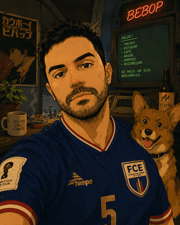

Servidor público em transição de carreira para tecnologia, unindo experiência em governança e modelagem de dados a uma formação full-stack em andamento.
Ver Meus ProjetosEstruturação semântica de páginas web com boas práticas de acessibilidade.
Layouts com CSS Grid, Flexbox, animações e design responsivo.
Programação client-side para interatividade e dinamismo nas páginas.
Linguagem versátil para automação, análise de dados e back-end.
Programação orientada a objetos para aplicações robustas e escaláveis.
Modelagem e consulta de bancos relacionais (PostgreSQL, MySQL).
Formado em Letras e Direito, atuei por anos na área jurídica do Tribunal Superior do Trabalho, trabalhando com sistemas jurídicos, dados e processos digitais. Hoje atuo no Núcleo de Arquitetura da Informação (NUINF), com governança digital e modelagem de dados, enquanto curso Análise e Desenvolvimento de Sistemas no SENAC e me qualifico como Programador Web pela Escola Técnica do Guará (DF).
Há mais de dois anos venho trilhando o caminho para me tornar desenvolvedor full-stack com foco em dados, unindo a lógica que aprendi analisando processos e normas à lógica de código.
Anos de Estudo em TI
Cursos em Andamento
Tecnologias Estudadas